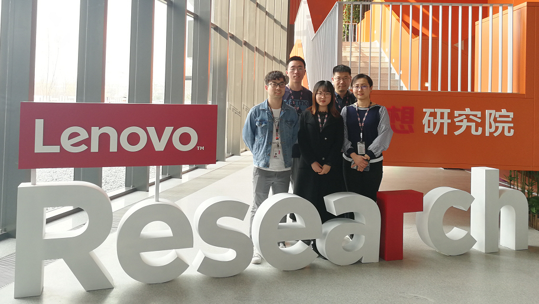
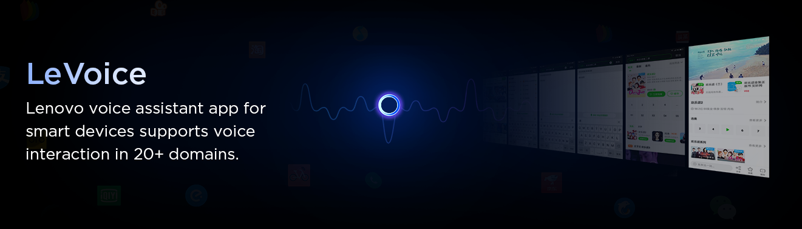

近日，联想研究院人工智能实验室语音团队（LeVoice）在 Interspeech VOiCES（Voices Obscured in Complex Environmental Settings）国际远场语音识别比赛固定系统项目中，喜获第二名的好成绩，系统性能位于国际第一梯队。
参赛队伍杨琳（队长）、梁玉龙、王旭阳、李英杰、贾宸合影
VOiCES Challenge 是基于VOiCES数据集的远场语音技术评测，包括远场语音识别(英文)和远场说话人识别两项技术，每项任务又分为固定数据集任务（fixed training condition）和开放数据集任务(opentraining condition)。固定数据集任务，就是训练数据用组委会发放的指定数据来做，不可用额外数据，更侧重于考察技术；开放数据集任务，是指参赛单位可以添加其他来源的训练数据，主要考察在海量数据情况下可以达到的最佳性能。参赛单位可以自选一个或者几个任务参加。大赛由SRI International联合多家知名机构共同举办。
本次评测也是Interspeech 2019 系列评测之一，参赛团队包括STC（俄罗斯语音技术中心），JHU（美国约翰霍普金斯大学），I2R（新加坡信息通信研究所）、TalTech（爱沙尼亚塔林理工大学）等老牌强队。
Interspeech是语音通讯领域最顶级的国际盛会，每年9月召开，会议会选择当年两三个重要的国际评测进行专场讨论，入选的评测都反映了当前学术界和工业界最受学者们关注的热点和难点。
本次LeVoice团队参加的是远场语音识别评测的固定数据集任务，主办方提供80小时的干净语音训练数据，测试数据是VOiCES的带噪远场语音数据。团队要依靠前端信号处理技术、训练数据扩展技术、基于DNN的声学模型技术、基于RNN的语言模型技术和多模型融合技术，来提升复杂场景远场语音识别性能。
远场语音识别是目前语音识别的难点，突破这一问题可以促进智能语音技术在更多的产品中落地，解决用户在复杂场景下语音交互体验不佳的痛点，这也是联想研究院的重点发力技术方向之一。
联想研究院人工智能实验室语音团队支持了联想众多业务和产品，如中国市场所有联想及Moto手机里搭载的乐语音助手等。语音交互是一个涉及众多技术领域的方向，联想语音引擎LeVoice以最佳的端到端用户体验为目标，一直着力对硬件设备和产品目标任务域进行深度定制和优化，赋能联想生态。
联想研究院人工智能实验室刚成立两年就获得了很多成果，2018年，在CCF国际自然语言处理与中文计算会议上荣获最佳论文奖，在全国知识图谱与语义计算大会获得了开放领域的中文问答任务评测第二名，其开发的E-Health智能医疗图像辅助诊断系统荣获中国计算机学会“科学技术奖科技进步优秀奖”，集成其开发的分布式训练Letrain的联想LiCO产品在全球超算大会上获得了最佳AI产品/技术奖。2017年，在全球LiTS（Liver Tumor Segmentation Challenge，肝脏肿瘤病灶区CT图像分割挑战）大赛上，E-Health解决方案以世界领先的肝脏肿瘤CT图像分割准确率指标夺得大赛冠军。